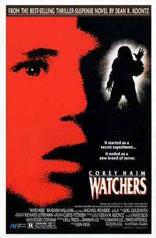

The genetics
Genetic engineering creates the film's whole cast of non-human or not-quite-human characters. A classified laboratory has produced a golden retriever with near-human intelligence, an 'Outside Experimental Combat Mammal' bred as a killing machine and drawn to the dog, and, as the climax reveals, the government agent Lem Johnson, an engineered assassin with no conscience. The scientists themselves are barely seen; the research is represented by the cover-up, in which agents kidnap witnesses and murder a sheriff to keep it secret. The story contrasts the lovable dog, the heart of a boy-and-his-dog tale, with the monster and the assassin, and presents the laboratory's work as reckless and amoral, though the dying OXCOM is given a moment of pity. Based on Dean Koontz's novel, the film was widely panned, and reviewers found its creature and the dog's feats of intelligence preposterous; real animals cannot be engineered to reason or type.
How genetics is portrayed
- Overall portrayal of genetics
- negative Genetic engineering in secret laboratories produces monsters and killers that the heroes must destroy, and the institutions behind it hide their work through violence.
- Outcome of the genetic intervention
- negative The OXCOM kills Tracey's father, Travis's friends, school staff and police, and the engineered agent Johnson murders the sheriff and his own partner; only the dog is a benign result.
- The research laboratory (Banodyne/Panadyne) and its sponsors
- villain Aim: military (negative). The laboratory engineers an intelligent dog, a combat monster and a conscienceless assassin, and the National Security Organization covers up the escape by kidnapping and murder. The film presents the project only through its monstrous results and ruthless cover-up.
The story
An explosion at a secret research laboratory lets two experimental animals escape: a highly intelligent golden retriever and the OXCOM, a monstrous killing machine that hunts the dog. Teenager Travis Cornell finds the dog, keeps it and discovers a 'GH3' tattoo in its ear marking it as a research animal. The OXCOM kills everyone in its path, including Travis's friends and police officers, while Lem Johnson, an agent of the National Security Organization, tracks the dog and silences witnesses, even murdering the sheriff. Travis and his mother Nora go on the run with the dog. At a cabin in the woods Johnson, holding Nora and Travis's girlfriend Tracey hostage, reveals that he is himself the laboratory's third experiment, a genetically engineered assassin without a conscience; Nora shoots him. Travis then kills the wounded, sobbing OXCOM, and the survivors leave with the dog.